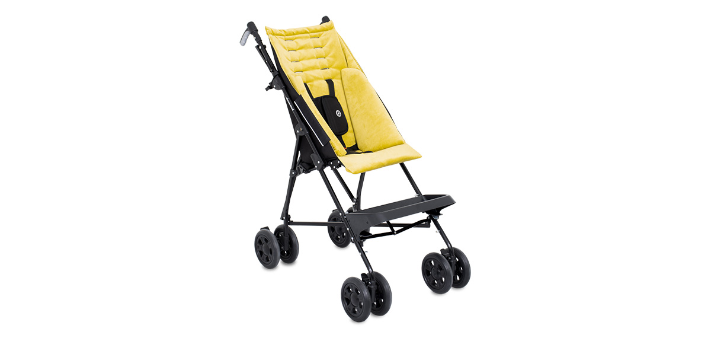

Wybierz kolor
Step 2 of 4
- 
TATALU™ – od teraz spacery z Twoim dzieckiem są jeszcze bardziej komfortowe! Nowa odsłona wózka spacerowego, którego lekka i wytrzymała konstrukcja doskonale sprawdzi się w każdych warunkach, a forma parasolki pozwala na szybkie złożenie i przechowywanie go, zajmując niewiele miejsca. Szereg udoskonaleń wpływa na poprawę odczuć zarówno użytkownika, jak i opiekuna. Wózek można w pełni personalizować – to Ty decydujesz o akcesoriach. TATALU™ – to komfort i stabilizacja! Szereg udoskonaleń takich jak tapicerka SOFT osłaniająca boki konstrukcji, zapewniając tym samym ochronę użytkownika, regulowane pasy 5 – punktowe z dodatkową osłoną, zagłówek czy podnóżek z możliwością zmiany pozycji, sprawia, że mały użytkownik czuje się w nim komfortowo i bezpiecznie. Tapicerka SOFT spełnia wysokie wymagania stawiane przez opiekunów, co potwierdza m. in. przeprowadzony test papierosa, świadczący o niepalności tkaniny. Zwiększenie komfortu zapewnia niezależny, wzmocniony system amortyzacji oraz obrotowe koła przednie, które zapewniają zwrotność wózka TATALU™. Przekonaj się, że spacery z Twoją pociechą mogą być jeszcze przyjemniejsze!
Program pogwarancyjny - 48 miesięcy dodatkowej ochrony
Program pogwarancyjny - 48 miesięcy dodatkowej ochrony